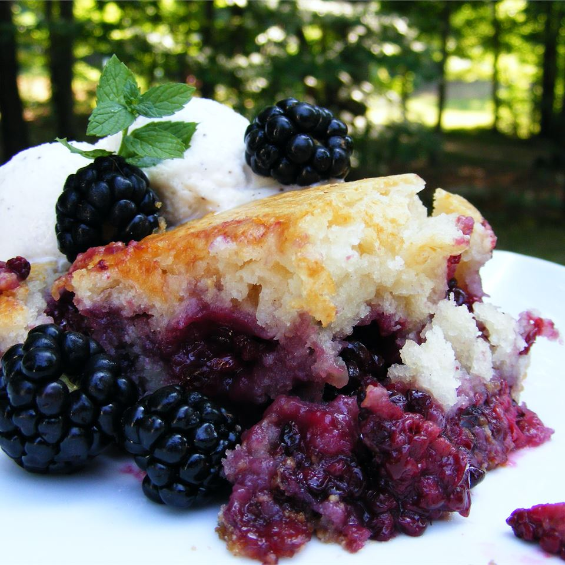

Baron's Blackberry Cobbler!
Baron's Blackberry Cobbler

422 calories; protein 6.1g; carbohydrates 76.4g; fat 10.9g; cholesterol 28.3mg; sodium 466mg
Easy blackberry cobbler. My father-in-law grows huge blackberries and always has tons. I tried a number of recipes and none really hit the spot. So created this one and it worked so well that my fiance said it was the best she had ever had. Serve warm with heavy or whipped cream.
- 1/2 cup sugar
- 2 tablespoons cornstarch
- 6 cups fresh blackberries
- 1/4 cup melted butter
- 2 1/2 cups all purpose flour
- 1 1/2 cups white sugar
- 1 tablespoon baking powder
- 1 teaspoon salt
- 2 cups milk
- 2 tablespoon vanilla extract
- 1/4 cup melted butter